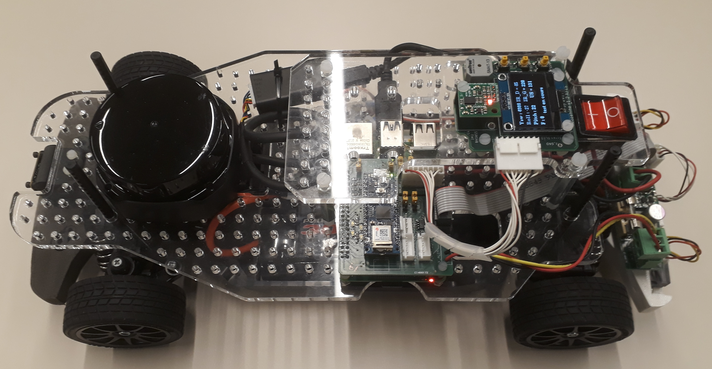

Voiture type pour la course de voitures autonomes de Paris Saclay
Une voiture type est proposée pour la course de voitures autonomes. Le kit complet et le kit {cartes électroniques, pièces mécaniques spécifiques} sont disponibles à la vente depuis janvier 2023, notamment pour des équipes sans moyens de fabrication mécanique et/ou électronique.
Cette voiture type n'est qu'un exemple pour aider les équipes à démarrer. Il ne demande qu'à être enrichi.


Contrôle-commande
Le schéma synoptique de la partie contrôle-commande est le suivant, avec plusieurs possibilités de Lidars, caméras, nano-ordinateurs ou micro-contrôleurs :

Les schémas électroniques au format Eagle et en pdf sont fournis dans le dossier Matériel du dépôt Git
La mécanique
Des pièces mécaniques permettent d'adapter le châssis TT-02 à ces équipements de contrôle-commande. Les fichiers stl sont fournis dans le dossier Matériel du dépôt Git

Outre les découpes propres de carrosserie, l'élément majeur de ce kit est la modification de la roue dentée de l'axe de transmission, l'ajout d'une fourche optique et d'un nouveau carter pour permettre la mesure de la vitesse du moteur.
Le kit propose notamment la possibilité d'utiliser un servo-moteur numérique AX-12 à la place du servo-moteur analogique standard.

Enfin, les pièces 3D permettent une fixation propre des capteurs à l'avant (caméra Raspberry) comme à l'arrière (télémètres IR et/ou ultrason).

Liste du matériel
Voici une liste de matériel, de fournisseurs et de prix TTC indicatifs.
- Tamiya TT-02 Toyota GR 86 KIT ref 58694 - RCTeam 58694 - 134,90 €
- Konect Servo 9kg 0.13s Digital KN-0913LVMG - RCTeam KN-0913LVMG - 19,90 €
- ORION Chargeur IQ801 1A - RCTeam ORI30197 - 15,90 €
-
T2M Accu 7.2v Nimh 3000mah - RCTeam T1006300 - 27,30 €
-
Raspberry Pi 4 modèle B - Kubii PI48GB - 94,50 €
- Câble officiel noir Micro-HDMI vers HDMI 1M - Kubii SC0270 - 4,80 €
- Carte Micro-SD Classe 10 32 GB - Kubii KG32_DEL - 8,94 €
- Alimentation Officielle pour Raspberry Pi 4 15.3W USB-C - Kubii ALIMPI4 - 9,60 €
- Module Caméra v2 8MP - Kubii 2510728 - 25,80 €
-
Nappe Cable pour Raspberry Pi Camera 30 cm - Kubii kub1645-PRD - 0,96 €
-
Scanner à distance laser RPLIDAR A2M12 360 Slamtec A2-M12 - Roboshop RB-Rpk-22 - 269,03 €
-
Câble USBA – microUSB 20 cm - RS 182-8869 - 3,14 €
-
Module Sonar SRF10 Devantech - Roboshop RB-Dev-10 - 36,86 €
- 2 Capteurs de Distance GP2Y0A41SK0F IR Sharp - 4 à 30 cm - Roboshop RB-Dem-04 - 22,44 €
- Module d'Orientation Absolue 9 DOF BNO055 Devantech - Roboshop RB-Dev-91 - 31,73 €
- Module nano 33 IOT avec embases Arduino - RS 192-7589 - 25,98 €
-
Fourche optique, avec câbles OPTEK TECHNOLOGY OPB815WZ - Farnell 1497919 - 5,39 €
-
Total des modules sur étagère 737,17 €
Options :
Jetson nano à la place de la Raspberry Pi :
- Kit de développement NVIDIA Jetson Nano 4GB - Kubii DEV-4GB - 202,80 €
STM32 à la place de la carte Arduino :
- Carte Nucleo STM32L432KC - Farnell 2580786 - 12,89 €
- Câble USB RS PRO, Micro-USB B vers USB A, 0.5m - RS 236-9078 - 2,89 €
Servomoteur numérique à la place du servomoteur analogique de direction :
- Servomoteur numérique Dynamixel AX-12 - Gotronic 36433 - 41 €
Caméra à placer sur le toit :
- Caméra Realsense D435i - Digikey 2311-82635D435IDKMP-ND - 445,54 €
- Module HUSKYLENS DFROBOT SEN0305 - Farnell 3517863 - 65,30 €
- Module intégré Husky Lens Pro AI DFROBOT SN0336 - Farnell 3517864 - 89,10 €
Le CRIC propose l'ensemble des cartes électroniques de la voiture type pour 250 € et l'ensemble des pièces mécaniques pour 260 €